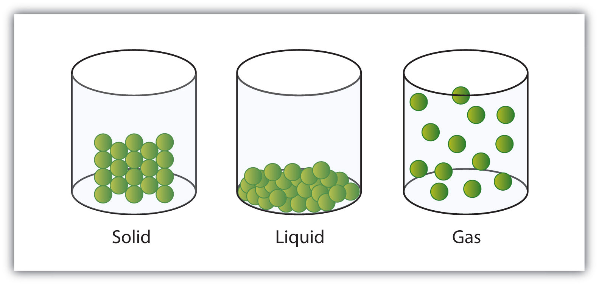

Solids and liquids are collectively called condensed phases because their particles are in virtual contact. The two states share little else, however.
In the solid state, the individual particles of a substance are in fixed positions with respect to each other because there is not enough thermal energy to overcome the intermolecular interactions between the particles. As a result, solids have a definite shape and volume. Most solids are hard, but some (like waxes) are relatively soft. Many solids composed of ions can also be quite brittle.
Solids usually have their constituent particles arranged in a regular, three-dimensional array of alternating positive and negative ions called a crystalA regular, three-dimensional array of alternating positive and negative ions.. The effect of this regular arrangement of particles is sometimes visible macroscopically, as shown in Figure 8.7 "Crystalline Arrangement". Some solids, especially those composed of large molecules, cannot easily organize their particles in such regular crystals and exist as amorphousA solid with no regular structure. (literally, “without form”) solids. Glass is one example of an amorphous solid.
If the particles of a substance have enough energy to partially overcome intermolecular interactions, then the particles can move about each other while remaining in contact. This describes the liquid state. In a liquid, the particles are still in close contact, so liquids have a definite volume. However, because the particles can move about each other rather freely, a liquid has no definite shape and takes a shape dictated by its container.
If the particles of a substance have enough energy to completely overcome intermolecular interactions, then the particles can separate from each other and move about randomly in space. This describes the gas state, which we will consider further in Section 8.3 "Gases and Pressure". Like liquids, gases have no definite shape, but unlike solids and liquids, gases have no definite volume either. The change from solid to liquid usually does not significantly change the volume of a substance. However, the change from a liquid to a gas significantly increases the volume of a substance, by a factor of 1,000 or more. Figure 8.8 "A Representation of the Solid, Liquid, and Gas States" shows the differences among solids, liquids, and gases at the molecular level, while Table 8.2 "Characteristics of the Three States of Matter" lists the different characteristics of these states.
Figure 8.8 A Representation of the Solid, Liquid, and Gas States
A solid has definite volume and shape, a liquid has a definite volume but no definite shape, and a gas has neither a definite volume nor shape.
Table 8.2 Characteristics of the Three States of Matter
| Characteristic | Solid | Liquid | Gas |
|---|---|---|---|
| shape | definite | indefinite | indefinite |
| volume | definite | definite | indefinite |
| relative intermolecular interaction strength | strong | moderate | weak |
| relative particle positions | in contact and fixed in place | in contact but not fixed | not in contact, random positions |
What state or states of matter does each statement, describe?
Solution
What state or states of matter does each statement describe?
This state has individual particles in a fixed position with regard to each other.
This state has individual particles far apart from each other in space.
This state has a definite shape.
How do the strengths of intermolecular interactions in solids and liquids differ?
Solids have stronger intermolecular interactions than liquids do.
Earth is the only known body in our solar system that has liquid water existing freely on its surface. That is a good thing because life on Earth would not be possible without the presence of liquid water.
Water has several properties that make it a unique substance among substances. It is an excellent solvent; it dissolves many other substances and allows those substances to react when in solution. In fact, water is sometimes called the universal solvent because of this ability. Water has unusually high melting and boiling points (0°C and 100°C, respectively) for such a small molecule. The boiling points for similar-sized molecules, such as methane (BP = −162°C) and ammonia (BP = −33°C), are more than 100° lower. Though a liquid at normal temperatures, water molecules experience a relatively strong intermolecular interaction that allows them to maintain the liquid phase at higher temperatures than expected.
Unlike most substances, the solid form of water is less dense than its liquid form, which allows ice to float on water. In colder weather, lakes and rivers freeze from the top, allowing animals and plants to continue to live underneath. Water also requires an unusually large amount of energy to change temperature. While 100 J of energy will change the temperature of 1 g of Fe by 230°C, this same amount of energy will change the temperature of 1 g of H2O by only 100°C. Thus, water changes its temperature slowly as heat is added or removed. This has a major impact on weather, as storm systems like hurricanes can be impacted by the amount of heat that ocean water can store.
Water’s influence on the world around us is affected by these properties. Isn’t it fascinating that such a small molecule can have such a big impact?
What are the general properties of solids?
What are the general properties of liquids
What are the general properties of gases?
What phase or phases have a definite volume? What phase or phases do not have a definite volume?
Name a common substance that forms a crystal in its solid state.
Name a common substance that forms an amorphous solid in its solid state.
Are substances with strong intermolecular interactions likely to be solids at higher or lower temperatures? Explain.
Are substances with weak intermolecular interactions likely to be liquids at higher or lower temperatures? Explain.
State two similarities between the solid and liquid states.
State two differences between the solid and liquid states.
If individual particles are moving around with respect to each other, a substance may be in either the _______ or ________ state but probably not in the _______ state.
If individual particles are in contact with each other, a substance may be in either the ______ or _______ state but probably not in the ______ state.
hard, specific volume and shape, high density, cannot be compressed
variable volume and shape, low density, compressible
sodium chloride (answers will vary)
At higher temperatures, their intermolecular interactions are strong enough to hold the particles in place.
high density; definite volume
liquid; gas; solid